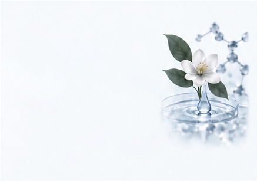
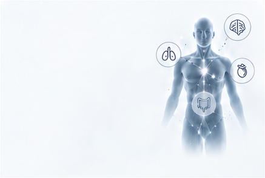
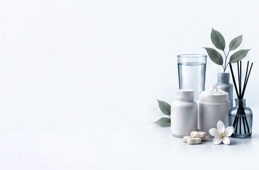
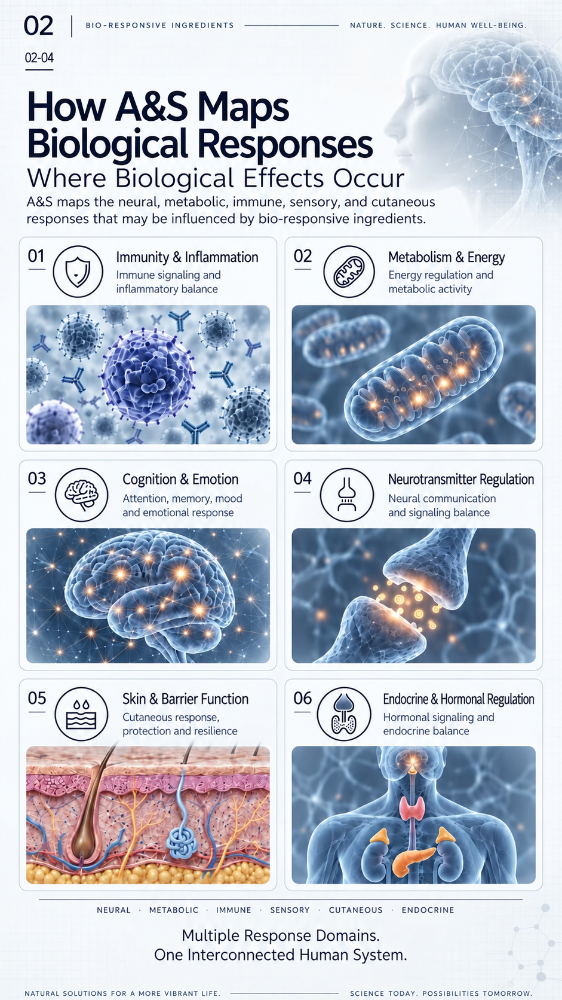

01
Ingredients & Actives
What creates the response
Natural ingredients · Botanical extracts · Functional molecules
Six Dimensions Of Ingredient Research
A&S studies bio-responsive ingredients from active compounds and biological interactions to functional outcomes and real-world applications.

What creates the response
Natural ingredients · Botanical extracts · Functional molecules
How ingredients engage
with the body
Oral intake · Inhalation ·
Topical application
How biological responses
are initiated
Sensory receptors · Neural pathways · Cellular signaling

Where biological effects occur
Immunity · Metabolism · Cognition · Neurotransmitters · Skin
What meaningful benefits
are expected
Health · Performance · Well-being

How research becomes real-world solutions
Food & beverage · Supplements · Skincare · Scented solutions
Natural solutions for a more vibrant life.
Science today. Possibilities tomorrow.
From natural sources to bio-responsive potential
A&S explores natural ingredients, active compounds, and selected aroma molecules
to understand their biological interactions and functional potential.

Woody
Fresh, Piney
Citrus, Fresh
Spicy, Woody
Eucalyptus-like
Floral, Fresh
Sweet, Anise
Floral, Relaxing
Floral, Fruity
Woody, Soft
Where Biological Effects Occur
A&S maps the neural, metabolic, immune, sensory, and cutaneous responses that may be influenced by bio-responsive ingredients.
Immune signaling and
inflammatory balance

Energy regulation and
metabolic activity
Attention, memory, mood
and emotional response
Neural communication
and signaling balance
Cutaneous response,
protection and resilience
Hormonal signaling and
endocrine balance
Neural · Metabolic · Immune · Sensory · Cutaneous · Endocrine
Multiple Response Domains.
One Interconnected Human System.
Natural solutions for a more vibrant life.
Science today. Possibilities tomorrow.
Expanding Bio-Responsive Potential Across Product Categories
A&S applies bio-responsive research to products that connect sensory experience, biological function,
and human well-being.
Skin function · Sensory response · Whole-person well-being
Mood · Relaxation · Restorative experience
Targeted functional support · Daily wellness · Healthy balance
Natural solutions for a more vibrant life.
Science today. Possibilities tomorrow.